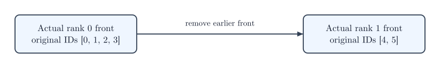
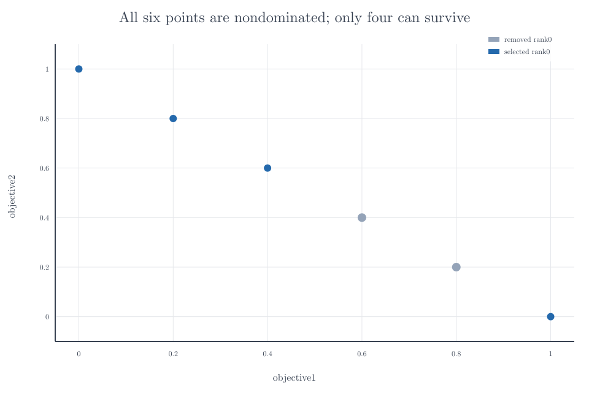
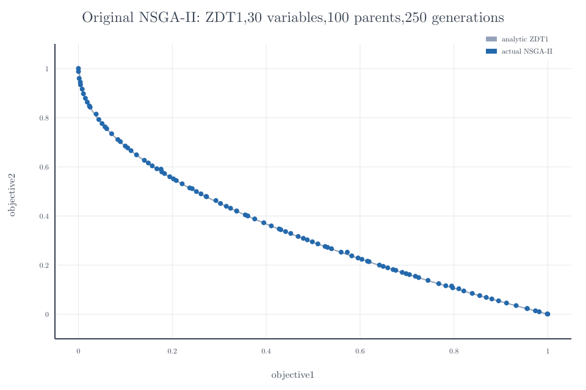
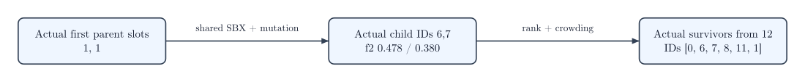

NSGA-II: ranks, crowding and finite survival
Abstract
Approximate multi-objective trade-offs with native nondominated sorting, crowding-based survival and shared SBX/polynomial mutation. Actual canonical histories explain the original six objective vectors and a finite-capacity truncation control. The original30-variable ZDT1 run is retained with freshly computed coverage and vertical-gap summaries, while actual tournaments expose the selection mechanism without an unlimited-archive claim.
Dominance creates fronts, not a single optimum
All objectives are minimized. A point dominates another when it is no worse in every objective and strictly better in at least one. The first front contains points with no dominator; removing that front exposes the next, and repeating partitions the cohort. Native ranks are zero-based, so rank0 corresponds to the traditional first front. Equal objective vectors do not dominate each other and may remain as duplicate points.
The producer visits every unordered pair in original index order. It records which point dominates, if either, and maintains domination counts/lists. Decrementing counts after removing a front discovers the next front. This uses O(mP²) objective-comparison work and O(P²) dominated-set storage in the worst case for P points and m objectives. Actual counters count pair visits and shared dominance calls, rather than inventing a platform-independent number of component or CPU comparisons.
Retain the original six objective vectors
The original A..F values are(.1,.9),(.3,.4),(.6,.2),(.9,.1),(.5,.6),(.8,.5). B dominates E, while B and C dominate F; A through D form the first front. The native ranking trace supplies the complete partition, actual pair relations and actual crowding values. The diagram reads the actual two fronts, and the table retains every point.
#include <dm/dm.hpp>
int main() {
std::filesystem::create_directories("build");
auto t = dm::optim::nsga2_rank_trace(dm::optim::nsga2_demo_points());
auto &r = t.ranking;
dm::graphics::Diagram d;
for (std::size_t i = 0; i < r.fronts.size(); ++i) {
d.node(std::to_string(i), {9. * i, 0},
std::format("Actual rank {} front\noriginal IDs {}", i,
r.fronts[i]));
if (i)
d.edge(std::to_string(i - 1), std::to_string(i),
"remove earlier front");
}
std::print("| original name | objective1 | objective2 | actual zero-based rank | actual crowding |\n| " "--- | ---: | ---: | ---: | ---: |\n");
for (std::size_t i = 0; i < r.points.size(); ++i)
std::print("| {} | {} | {} | {} | {} |\n", char('A' + i),
r.points[i].objectives[0], r.points[i].objectives[1],
r.ranks[i], r.crowding[i]);
std::print("\n| actual dominating ID | actual dominated ID |\n| ---: | ---: |\n");
for (auto &pair : t.pairs)
if (pair.relation)
std::print("| {} | {} |\n",
pair.relation < 0 ? pair.first : pair.second,
pair.relation < 0 ? pair.second : pair.first);
d.save_svg("build/nsga_tiny.svg");
}| original name | objective1 | objective2 | actual zero-based rank | actual crowding |
|---|---|---|---|---|
| A | 0.1 | 0.9 | 0 | inf |
| B | 0.3 | 0.4 | 0 | 1.5 |
| C | 0.6 | 0.2 | 0 | 1.1250000000000002 |
| D | 0.9 | 0.1 | 0 | inf |
| E | 0.5 | 0.6 | 1 | inf |
| F | 0.8 | 0.5 | 1 | inf |
| actual dominating ID | actual dominated ID |
|---|---|
| 1 | 4 |
| 1 | 5 |
| 2 | 5 |

Crowding preserves selected spread, not every nondominated point
Within a processed front, each objective supplies an ascending order. Its first and last points receive infinite crowding; interior points add the normalized gap between their two objective neighbors. Boundary infinities remain, and a zero objective range skips its divisions after endpoints are marked. Thus tied/constant objectives can designate arbitrary equal-valued endpoints; no geometric uniqueness or density-estimation guarantee follows.
Survival fills complete fronts until its capacity is reached. If a final front is too large, it retains only its largest crowding values. The six points below are all mutually nondominated, but capacity four necessarily removes two. This directly corrects the old assertion that a globally nondominated solution can never be lost. This optimizer stores no external unlimited archive. Exact equal-crowding ties follow the standard library’s unspecified sort ordering.
#include <dm/dm.hpp>
int main() {
std::filesystem::create_directories("build");
auto t =
dm::optim::nsga2_survival_trace(dm::optim::nsga2_truncation_points(), 4);
auto &r = t.combined.ranking;
std::vector<bool> kept(r.points.size());
for (auto i : t.selected)
kept[i] = true;
std::vector<double> kx, ky, rx, ry;
std::print("| original ID | actual rank | actual processed crowding | selected |\n| ---: | ---: | ---: " "| --- |\n");
for (std::size_t i = 0; i < r.points.size(); ++i) {
std::print("| {} | {} | {} | {} |\n", i, r.ranks[i], r.crowding[i],
bool(kept[i]));
if (kept[i]) {
kx.push_back(r.points[i].objectives[0]);
ky.push_back(r.points[i].objectives[1]);
} else {
rx.push_back(r.points[i].objectives[0]);
ry.push_back(r.points[i].objectives[1]);
}
}
auto p = dm::graphics::RPlot::create();
p.points(rx, ry, "removed rank0", {148, 163, 184}, 7).points(
kx, ky, "selected rank0", {36, 105, 172}, 6).title(
"All six points are nondominated; only four can survive").x_label(
"objective1").y_label("objective2").save_svg("build/nsga_truncation.svg");
std::print("\nActual survivor order {}.\n", t.selected);
}| original ID | actual rank | actual processed crowding | selected |
|---|---|---|---|
| 0 | 0 | inf | true |
| 1 | 0 | 0.8 | true |
| 2 | 0 | 0.8 | true |
| 3 | 0 | 0.8 | false |
| 4 | 0 | 0.8 | false |
| 5 | 0 | inf | true |
Actual survivor order [0, 5, 1, 2].

Retain the original30-variable ZDT1 run
The original setup uses30 variables in[0,1], population100,250 generations and seed1. Defaults remain crossover probability.9, SBX index15, per-variable mutation probability1/30 and mutation index20. The canonical ZDT1 fixture computes f1=x0, g=1+9Σ_(j>0)x_j/29 and f2=g(1−sqrt(f1/g)); its analytic efficient front has g=1 and f2=1−sqrt(f1).
The first actual initial-population callback fixes the objective count; there is no discarded dimension probe. Total callbacks are100·251=25100. Fresh summaries report the final nondominated count, observed f1 coverage and mean signed vertical gap f2−(1−sqrt(f1)). This is a descriptive vertical gap, not hypervolume, IGD, an optimizer stopping criterion or a convergence certificate. The original every-eighth sorted point table is retained. Ordinary execution avoids retaining a quadratic detailed history of every generation.
#include <dm/dm.hpp>
int main() {
std::filesystem::create_directories("build");
dm::optim::ZDT1Objective objective(30);
dm::optim::NSGA2Options options;
options.population_size = 100;
options.max_generations = 250;
options.seed = 1;
auto run =
dm::optim::NSGA2(options).run(objective, std::vector<double>(30, 0),
std::vector<double>(30, 1));
auto front = dm::optim::nsga2_sorted_front(run.front);
auto summary = dm::optim::zdt1_front_summary(front);
std::print("| actual front points | observed minimum f1 | observed maximum f1 | mean signed vertical " "gap | actual objective callbacks | actual ranking pairs |\n| ---: | ---: | ---: | ---: | " "---: | ---: |\n| {} | {} | {} | {} | {} | {} |\n",
front.size(), summary.min_f1, summary.max_f1, summary.mean_gap,
run.work.evaluations, run.work.ranking_pairs);
std::print("\n| original every-eighth sorted index | actual f1 | actual f2 |\n| ---: | ---: | ---: |\n");
std::vector<double> x, y, rx, ry;
for (std::size_t i = 0; i < front.size(); ++i) {
x.push_back(front[i].objectives[0]);
y.push_back(front[i].objectives[1]);
if (i % 8 == 0)
std::print("| {} | {} | {} |\n", i, x.back(), y.back());
}
for (auto &p : dm::optim::zdt1_front()) {
rx.push_back(p.objectives[0]);
ry.push_back(p.objectives[1]);
}
auto plot = dm::graphics::RPlot::create();
plot.lines(rx, ry, "analytic ZDT1", {148, 163, 184}).points(
x, y, "actual NSGA-II", {36, 105, 172}, 4).title(
"Original NSGA-II: ZDT1,30 variables,100 parents,250 generations").x_label("objective1").y_label("objective2").save_svg("build/nsga_original.svg");
}| actual front points | observed minimum f1 | observed maximum f1 | mean signed vertical gap | actual objective callbacks | actual ranking pairs |
|---|---|---|---|---|---|
| 100 | 9.697665362470373e-09 | 0.999881761250123 | 0.0015309447256761598 | 25100 | 4979950 |
| original every-eighth sorted index | actual f1 | actual f2 |
|---|---|---|
| 0 | 9.697665362470373e-09 | 1.0007888362708872 |
| 8 | 0.018866798544321217 | 0.8636579406652478 |
| 16 | 0.07082481412817732 | 0.7350211904298316 |
| 24 | 0.14895058759473123 | 0.6158905313904821 |
| 32 | 0.20848056367932974 | 0.5444751730342177 |
| 40 | 0.2929289347108772 | 0.46304721018311806 |
| 48 | 0.3755319836768318 | 0.3880196388371126 |
| 56 | 0.479102837539228 | 0.30908002112340965 |
| 64 | 0.5727612676956135 | 0.2526203301667985 |
| 72 | 0.6588872396016552 | 0.18906608923789978 |
| 80 | 0.7447003561924225 | 0.13785082934009169 |
| 88 | 0.8548868743265052 | 0.07595639382432066 |
| 96 | 0.9735777774529647 | 0.014002709609471801 |

Inspect actual tournaments, offspring ancestry and survival
A smaller six-parent,two-variable,one-generation run makes the mechanics observable. Each binary tournament draws two slots with replacement. Lower rank wins; equal ranks prefer strictly larger crowding, and exact ties choose the second draw. The two winning parents may coincide. Both SBX children mutate and evaluate in the original order before the combined parent/offspring pool is ranked.
The table uses actual tournament records, and the diagram uses actual first-pair ancestry, combined-pool size and selected IDs. Processed crowding fields are flagged explicitly: survival does not compute crowding for later fronts once capacity is full. Such unprocessed public snapshot values are zero placeholders, not silently asserted distances. Complete actual pair and objective-order records remain available for the processed stages.
#include <dm/dm.hpp>
int main() {
std::filesystem::create_directories("build");
dm::optim::ZDT1Objective objective(2);
dm::optim::NSGA2Options options;
options.population_size = 6;
options.max_generations = 1;
options.seed = 1;
auto t = dm::optim::NSGA2(options).trace(objective, {0, 0}, {1, 1});
auto &g = t.generations.front();
std::print("| actual tournament | first slot | second slot | first rank | second rank | first crowding " "| second crowding | actual winner |\n| ---: | ---: | ---: | ---: | ---: | ---: | ---: | " "---: |\n");
for (std::size_t i = 0; i < g.tournaments.size(); ++i) {
auto &a = g.tournaments[i];
std::print("| {} | {} | {} | {} | {} | {} | {} | {} |\n", i, a.first,
a.second, a.rank_first, a.rank_second, a.crowding_first,
a.crowding_second, a.winner);
}
auto pair = g.parents.front();
auto &a = g.combined.ranking.points[pair.first_child];
auto &b = g.combined.ranking.points[pair.second_child];
dm::graphics::Diagram d;
d.node("parents", {0, 0},
std::format("Actual first parent slots\n{}, {}", pair.first_parent,
pair.second_parent));
d.node("children", {8, 0},
std::format("Actual child IDs {},{}\nf2 {:.3f} / {:.3f}",
pair.first_child, pair.second_child, a.objectives[1],
b.objectives[1]));
d.node("survival", {16, 0},
std::format("Actual survivors from {}\nIDs {}",
g.combined.ranking.points.size(), g.selected));
d.edge("parents", "children", "shared SBX + mutation").edge(
"children", "survival", "rank + crowding");
d.save_svg("build/nsga_generation.svg");
std::print("\nActual callbacks {}; captured logical units {}; actual survivor IDs {}.\n",
t.run.work.evaluations, t.captured_entries, g.selected);
}| actual tournament | first slot | second slot | first rank | second rank | first crowding | second crowding | actual winner |
|---|---|---|---|---|---|---|---|
| 0 | 4 | 1 | 2 | 0 | inf | inf | 1 |
| 1 | 2 | 1 | 1 | 0 | inf | inf | 1 |
| 2 | 0 | 0 | 0 | 0 | 2 | 2 | 0 |
| 3 | 4 | 3 | 2 | 1 | inf | inf | 3 |
| 4 | 5 | 3 | 0 | 1 | inf | inf | 5 |
| 5 | 5 | 5 | 0 | 0 | inf | inf | 5 |
Actual callbacks 12; captured logical units 372; actual survivor IDs [0, 6, 7, 8, 11, 1].

Contracts, complete costs and references
Complete finite strict bound vectors, finite widths and valid rate/index options are checked before any callback. Requested populations zero/one become two; odd values round up, with an effective population cap1000000. The first actual callback must return2..1000000 finite objectives and every later callback must retain that shape. Nonfinite/out-of-box variation coordinates, nonfinite crowding ranges/gaps or changing callback outputs fail explicitly. Earlier callback effects remain on later failure; no partial result/history is returned.
For G generations,N parents,m objectives and n variables, sorting costs O((G+1)mN²), variation adds its actual work and crowding adds objective sorts; final nondominated extraction is also quadratic. Dominated-set storage is O(N²), with population values O(N(n+m)). Selected work counters exclude callback cost, standard-sort comparator counts and the final filter; they are not a hardware instruction census.
Detailed traces own original bounds/options, point rows and values, ranks/crowding/assigned entries, front/order IDs, pair/tournament/parent/generation records, selected IDs and final population/front records. Their logical quota defaults to1000000 and zero disables; admission precedes retained records/copies. Complete pair histories can be quadratic per generation, so a large ordinary run need not fit a detailed trace’s default budget. This is a logical-history policy, not a peak-RAM claim.
Deb, Pratap, Agarwal and Meyarivan (2002), A fast and elitist multiobjective genetic algorithm:NSGA-II describes nondominated sorting and crowding survival. Zitzler, Deb and Thiele (2000), Comparison of multiobjective evolutionary algorithms: empirical results provides the ZDT benchmark context. The explicit truncation control and actual histories distinguish elitist finite survival from an unlimited Pareto archive or guaranteed convergence.
Verification
This ten-report batch passes75 CTest cases,22 directly instrumented ASan/UBSan
cases,122 compiled and executed public examples,538/538 scoped documentation
definitions and ten representative clangd hovers. Independent Python
arbitrary-precision arithmetic verifies69365 captured division records
with656460 checks; native independent polynomial, geometry, finite-range, graph,
ranking and callback checks cover the remaining producers. Frozen valid-input
comparisons preserve Neville recurrences, Newton result/callback paths, complete
byte encodings, switch routes and NSGA-II complete objective-call
sequences/final fronts. Ten checkout headers and ten byte-identical installed
development headers compile independently; an installed-header native consumer
links and runs. All40 complete programs execute, and40 native figures have been
visually reviewed; HTML/Markdown exports preserve computed rows/prose and
identical image bytes. Checks are scoped native checks, not an installation
claim for every language binding. Receipts:
build/mepml-conversion/batch-254-263/.